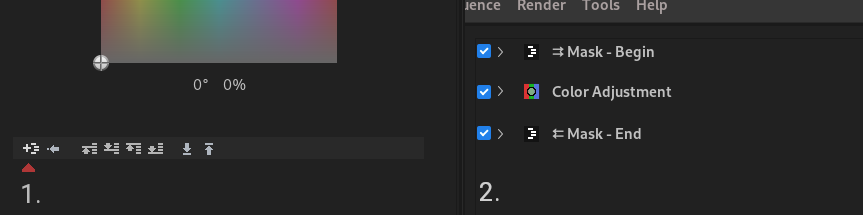

In Flowblade Movie Editor you can add a Filters to all clips to modify output image and audio.
Filter Workflow
Adding Filter
- Click Right Mouse on any clip and select for example Add Filter -> Blur -> Pixelize from popup menu.
- Drag a filter from Filters Select Panel on top of a Clip on the Timeline. Filters Select Panel might not displayed or available on small screen size systems.
- Click on filter icon on Edit Panel if filters are currently being edited.
Opening Filter for Editing in Filters tab
- Click Right Mouse on any clip and select item Edit Filters from popup menu.
- Double click on any clip.
Editing Filters
- Parameters defing output are edited Edit Panel once Clip is opened there to be edited.
- Clips will display small filter icon in the top right corner if a filter has been added to them.
- Clips will display grey filter icon in the center of the clip while clip is being edited.
Editing with Keyframe Tool
Filters property values can also be edited on timeline, see Keyframe Tool.
Cloning Filters from other Clips
- Copy Paste workflow:
- Select filters source Clip with Left Mouse.
- Press Control + C to copy Clip and filters.
- Select filters target Clip with Left Mouse.
- Press Control + Alt + V to paste filters.
- Click Right Mouse on any clip and select Clone Filters -> From Next Clip or Clone Filters -> From Previous Clip from popup menu.
Deleting Filters from Clips
- When editing filters Edit Panel press on the Trash Can Icon with Left Mouse.
- Select clip or range of clips in Timeline and select Clear Filters from application menu.
Filter Masking
Filter masking allows for one or more filters to be applied only on some user defined part of image.

1) Filter masking menu launch button above red triangle, 2) Filters editor after adding mask with all filter edit panels minified. Mask - Begin and Mask - End filters define which filters are masked.
- Click Filter Mask Menu launch button and select if you wish to apply mask on one or all filters.
- In submenu select mask Alpha Shape, Alpha Shape Motion Tracked, Luma Key, Video/Image File Alpha, Video/Image File Luma or Color Select.
- Edit mask parameters in filter edit panel for Mask - Begin filter.
- You can movefilters in and out of the masked range of filter stack.
Tips for Filters
Compressor
Information on how audio dynamic range compression works, and on meaning and function of parameters in this filter is available in this Wikipedia article.
Perspective
With parameter Sense set to value Destination it is possible to set the corners of image anywhere in the destination image but there is visual glitch with sides of image being stretched, this is a known issue described here.
The workaround is to add a Crop filter before Perspective filter and cut at least 1 pixel from all sides of the image.
Filter editing Keyboard shortcuts
See tables Keyframe and Geometry Editor, Geometry Editor and RotoMask Editor in Flowblade Default keyboard Shortcuts document.